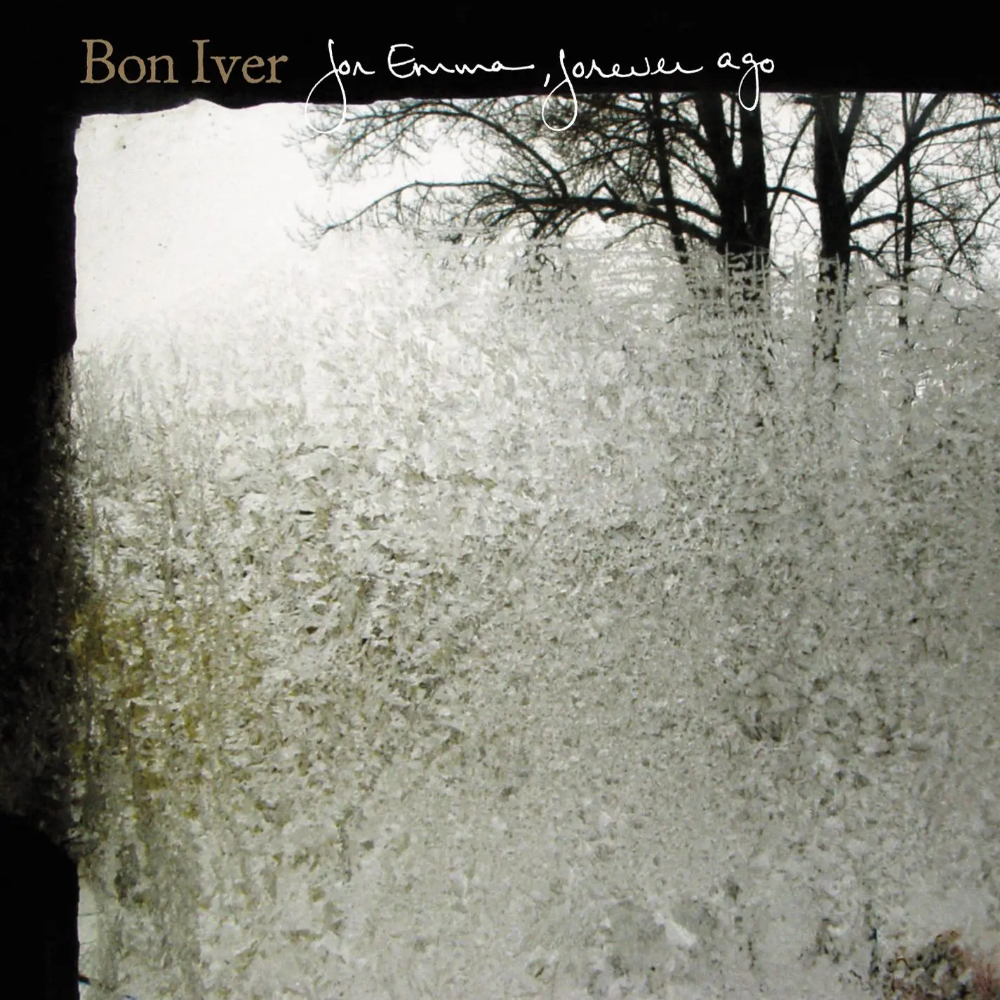

Album#53
For Emma, Forever Ago


专辑信息
- 专辑名称： For Emma, Forever Ago
- 歌手： Bon Iver
- 年份： 2008-02-19
- 时长： 約 38 分鐘


天氣開始轉涼，想找點聴起來比較温暖的音樂聴，想到了 Bon Iver 的音樂，因為他的聲音聴著比較温暖 (其實 High Violet 也不錯，Matt Beringer 的聲音也讓我覺得温暖)。
最早知道 Bon Iver 是從 HOPICO 女主持出现了!今年的新歌都这么好听?丨HOPICO LINE 看到的，裡面缺省的主唱艾迪娜分享了她喜歡的歌，其中就有 Bon Iver 的歌 (《SABLE, fABLE》專輯裡的歌)，後來我就把 Bon Iver 的專輯都找來聴了聴，都挺喜歡的，來來回回地聴了好久。
Bon Iver 是一支美國獨立民謠樂團，由創作歌手 Justin Vernon 於 2006 年在 威斯康辛州歐克萊爾 創立。 Bon Iver 這個名字源自法語短語 bon hiver，意為「美好的冬天」，取自 1990 年代電視劇《北國風雲》中的一句問候語 (這麼一看，Bon Iver 的歌也確實很適合冬天來聴呢)。
這次分享的專輯 《For Emma, Forever Ago》 是 Bon Iver 的首張錄音室專輯，當時的他在生活、情感上都受到了挫折，於是在那個冬季，他决定离開生活的城市 Raleigh，前往家鄉裡父親搭的狩獵小屋獨处一段時間 (几個月)，這張專輯就是在那段時間裡創作出來的。
專輯的封面大概是透過狩獵小屋的結冰的窗向外看到的畫面。
專輯整體氛圍給人一種孤寂哀伤的感覺，樂器主要還木吉他， Justin Vernon 疊加了多层的聲音聴著很柔和，我覺得還適合冬天的聴的。如果你喜歡這張專輯，不妨把 Bon Iver 的其它專輯找來聴聴，我想你也會喜歡的。
TRACKLIST
Flume
[Verse 1]
I am my mother's only one
It's enough1
I wear my garment so it shows2
Now you know
[Chorus]
Only love is all maroon3
Gluey feathers4 on a flume5
Sky is womb and she's the moon6
[Verse 2]
I am my mother on the wall7
With us all
I move in water, shore to shore
Nothing's more
[Chorus]
Only love is all maroon
Lapping lakes like leery loons8
Leaving rope burns, reddish ruse
[Instrumental Break]
[Chorus]
Only love is all maroon
Gluey feathers on a flume
Sky is womb and she's the moon
木吉他柔和的節奏，Justin Vernon 柔和的嗓音和發音，整首歌聴著都是柔和的。歌的旋律也很好聴，喜歡副歌，尤其是最後有女聲的那段。
Lump Sum
[Verse 1]
Sold my cold knot
A heavy stone9
Sold my red horse for a venture home
To vanish on the bow
Settling slow
Fit it all, fit it in the doldrums
(Or so the story goes)
Color the era
Film its historical
Ahh, ahh, ahh
[Verse 2]
My mile could not
Pump the plumb
In my arbor 'till my ardor trumped
Every inner inertia
Lump sum
All at once
Rushing from the sub-pump
(Or so the story goes)
Balance we won't know
We will see when it gets warm
Ahh, ahh, ahh
Lump Sum 的意思是指一次付清的一筆總額，好比是全款買下一樣東西，而不是分期，有一種長痛不如短痛，做出了某種决定的感覺。
當時的 Justin Vernon 处於低潮期 (丁世光和叶喜儿的那首《低潮期》也好聴)，於是他决定离開生活的城市 Raleigh，去了他父親位於家鄉威斯康辛州歐克萊爾西北方一小時車程處的偏遠狩獵小屋，在小屋裡獨處了几個月，創作了這張専輯。
Lump Sum 的吉他旋律聴起來是明快的，像是要出發踏上旅程一般，歌曲給人一種决定放下過去，嘗試做出改變的感覺。
Skinny Love
[Verse 1]
Come on, skinny love, just last the year
Pour a little salt, we were never here
My my my, my my my, my my10
Staring at the sink of blood and crushed veneer
I tell my love to wreck it all
Cut out all the ropes and let me fall
My my my, my my my, my my
Right in this moment, this order's tall11
[Chorus]
And I told you to be patient
And I told you to be fine
And I told you to be balanced
And I told you to be kind
And in the morning I'll be with you
But it will be a different kind
And I'll be holding all the tickets
And you'll be owning all the fines12
[Verse 2]
Come on, skinny love, what happened here?
Suckle on the hope in light brassiere13
My my my, my my my, my my
Sullen load is full, so slow on the split
[Chorus]
And I told you to be patient
And I told you to be fine
And I told you to be balanced
And I told you to be kind
And now all your love is wasted
And then who the hell was I?
Now I'm breaking at the britches
And at the end of all your lines14
[Outro]
Who will love you?
Who will fight?
Who will fall far behind?
Skinny Love 是《For Emma, Forever Ago》發行的首支單曲，描寫了一段失敗戀情，以及由此而生的悔恨。
[…]但這首歌寫的是我當時經歷的那段感情：你會因為需要幫助而進入一段關係，但那未必就是你該談戀愛的理由。這就是「瘦弱」(skinny)之處。它沒有重量。瘦弱的愛沒有機會，因為它得不到滋養。
Bon Iver by Grayson Haver Currin
喜歡裡面「My My My…」和「And I told you…」的那段。
The Wolves (Act I and II)
[Verse 1]
Someday, my pain
Someday, my pain will mark you15
Harness your blame
Harness your blame and walk through16
[Chorus]
With the wild wolves around you
In the morning, I'll call you
Send it farther on
[Verse 2]
Solace my game
Solace my game, it stars you
Swing wide your crane
Swing wide your crane and run me through
[Chorus]
And the story's all over you
In the morning, I'll call you
Can't you find a clue
When your eyes are all painted Sinatra blue?17
[Bridge]
What might have been lost
What might have been lost
What might have been lost
What might have been lost (Don't bother me)
What might have been lost
What might have been lost
What might have been lost (Don't bother me)
What might have been lost (Don't bother me)
What might have been (Don't bother me)
What might have been (Don't bother me)
What might have been lost (Don't bother me)
What might have been lost (Don't bother me)
What might have been lost
What might have been lost
Ahh, ahh, ahh
Ahh, ahh, ahh
[Outro]
Someday, my pain
Someday, my pain
Someday, my pain
Someday, my pain
Justin Vernon 层层堆叠的人聲真好聴， Bridge 部分的 「What might have been lost」更是好聴，歌聲一點點漸強，編曲也一點點變得繁複，鼓點的聲音聴起來像是火車輕過車軌時聲音，像是在离開遠走。「Ahh, ahh, ahh」那裡像是有某種管樂，也好聴。
Blindsided
[Verse 1]
Bike down
Down to the downtown
Down to the lock down
Boards, nails lie around
[Pre-Chorus]
I crouch like a crow
Contrasting the snow
For the agony, I'd rather know18
[Chorus]
'Cause blinded
I am blindsided
[Verse 2]
Peek in
Into the peer in
I'm not really like this
I'm probably plight-less
[Pre-Chorus]
I cup the window
I'm crippled and slow
For the agony, I'd rather know
[Chorus]
'Cause blinded
I am blindsided
[Bridge]
Would you really rush out?
Would you really rush out?
Would you really rush out? (For me now)
Would you really rush out?
Would you really rush out? (For me now)
Would you really rush out? (For me now)
Would you really rush out? (For me now)
Would you really rush out? (For me now)
Ooh, ooh (For me now)
Ooh, ooh (For me now)
[Verse 3]
Taught line
Down to the shoreline
The end of a blood line
The moon is a cold light
[Pre-Chorus]
There's a pull to the flow
My feet melt the snow
For the irony, I'd rather know
[Chorus]
'Cause blinded
I was blindsided
Blinded
I was blindsided
Blinded
I was blindsided
Justin Vernon 在 2015 年 Eaux Claires 音樂與藝術節 上表示，這首歌是關於試圖闖入他家鄉威斯康辛州歐克萊爾市中心 (downtown Eau Claire, Wisconsin) 的一棟建築物。
「Cause blinded，I am blindsided」因為被蒙蔽，他感到措手不及，他去了市中心的一棟建築物，也許計劃要做什麼。但他在外面躊躇了很久，最終放弃了行動，也許是冷靜下來了，最後歌詞變成了「Cause blinded，I was blindsided」。
喜歡副歌的旋律。
Creature Fear
[Verse 1]
I was full by your count
I was lost but your fool
Was a long visit wrong?
Say you are the only
[Chorus]
So many foreign worlds, so relatively fucked
So ready for us, so ready for us
The creature fear
[Verse 2]
I was teased by your blouse
Spit out by your mouth
I was loud by your lowered
Seminary sold19
Tear on, tail on
Take all on the wind on
The soft bloody nose
Sign another floor
[Chorus]
So many territories, ready to reform
Don’t let it form us, don’t let it form us
The creature fear
So did he foil his own? Is he ready to reform?
So many Torahs20, so many for us
The creature fear
喜歡主歌和副歌之間節奏和情緒的強烈變化，副歌也很好聴。
這首和後面的 Team 是連貫的， Team 是一段由口哨引領的過場，銜接 Creature Fear 與 For Emma，聴的時候最好連在一起聴。
Team
♫•*¨*•.¸¸♪
For Emma
[Verse 1]
So apropos
Saw death on a sunny snow
[Chorus]
For every life
Forgo the parable
Seek the light
My knees are cold
[Post-Chorus]
Running home, running home
Running home, running home
[Verse 2]
Go find another lover
To bring a
To string along
[Chorus]
With all your lies
You're still very lovable21
I toured the light
So many foreign roads
[Post-Chorus]
For Emma, forever ago22
除了「Running home」那兩句之外，整首歌都是歌手與女友之間的對話，推測他們分別是 Vernon 和他的前任。只有這一句不是對話，而是一段描述。
呈現出的畫面暗示她含淚逃離他，心知這段感情已經結束。她或許仍愛著他，但明白事情必須如此了。她就這樣逃走，跑回家去。離開時，她朝他喊道：
Go find another lover
To bring a
To string along
…
With all your lies
You're still very lovable
「去找另一個情人吧，
找個人……把人拴在身邊！
你滿口謊言，
卻還是那麼惹人憐愛。」
Vernon 隨後回應——很可能是在對自己說，也可能是很久以後，在父親的小木屋裡——為這段激烈卻未曾了結的對話畫下句點：
I toured the light
So many foreign roads
For Emma, forever ago
「我走遍光明；踏過無數異鄉道路。
為了 Emma，早已是很久以前的事了。」
在某次訪談中，Justin 曾說：「Emma 是一個會讓你深陷其中、難以脫身的地方。」他甚至聲稱，自己不在那裡時，就「無法面對自己」。
这首歌裡還有不少管樂，增加了一種温暖的質感。
Re: Stacks
[Verse 1]
This my excavation and to–
–day is Kumran23
Everything that happens is from now on
This is pouring rain, this is paralyzed
[Verse 2]
I keep throwing it down, two–
–hundred at a time24
And it's hard to find it when you knew it
When your money's gone and you're drunk as hell
[Chorus]
On your back with the racks as the stacks as your load
In the back and the racks of the stacks are your load
In the back with your racks and you're unstacking your load
[Verse 3]
I've been twisting to the sun
I needed to replace
And the fountain in the front yard is rusted out
All my love was down in a frozen ground
[Verse 4]
There's a black crow sitting across from me
His wiry legs are crossed
And he's dangling my keys, he even fakes a toss25
Whatever could it be that has brought me to this loss?
[Chorus]
On your back with your racks as the stacks of your load
In the back and the racks and the stacks of your load
In the back with your racks and you're unstacking your load
[Outro]
This is not the sound of a new man
Or crispy realization
It's the sound of the unlocking26 and the lift away
Your love will be safe with me
Re: Stacks 哀嘆著被凍結在土地裡的愛。
當被問到歌名中的「Re」有何含義時，賈斯汀・弗農回答：
「它是『關於 (Regarding)』的意思。人們會在信件和電子郵件中使用這個詞。它是用來指向某個概念，強調這首歌是關於那些堆疊的。我是說，每首歌名多少都有這種作用，但我就是很想特別指出來：這首歌不是那些堆疊本身，而是關於那些堆疊。」
副歌好聴。
在歌曲的最後，能聴到 Justin 放下吉他起身的聲音，如果你戴上耳機，聲音稍微放大點，還能聴到撥號的聲音。
Justin 唱完這首歌後，你可以聽到撥號音。這可能意味著他「解鎖 (unlocking)」的第一步是打電話給某人，可能是為了糾正過去的錯誤。
《For Emma, Forever Ago》整張專輯都是在他與世隔絕的小屋中寫成的，是對他孤獨處境的沉思。歌曲結尾的撥號音代表著他重新回到社會，也暗示 Justin 開始向前邁進。
Genius annotation for the lyrics “Your love will be safe with me”
脚注:
Justin Vernon 以這番話開場，因為他曾遭親近的人拋棄／背叛。但至少他還有母親，對母親而言他無可取代，這樣就足夠了。
Genius annotation for the lyrics “I am my mother's only one”
這個雙關語將「把真心掛在袖子上」(“wearing your heart on your sleeve”) 這句常見說法延伸開來，讓它涵蓋他的全身。
Genius annotation for the lyrics “I wear my garment so it shows”
栗紅色 (maroon) 是乾涸血液的顏色。愛不僅會帶來傷痛，而且在它傷你之後，看起來也不再那麼光彩奪目。而這正是它唯一會做的事。
「栗紅色」也是一個動詞，意思是「遺棄或孤立」。這或許表示，對 Justin 來說，愛就只是孤立，而這也是唯一能讓他如此痛苦的事情。他可以從其他事物中尋求慰藉，例如母親給他的安慰。
「黏糊糊的羽毛」可能暗示那些羽毛沾了血。
水槽（flume）是指「輸送水流的人工渠道，通常用於運送原木或木材」。
他扮演著伊卡洛斯式的人物。伊卡洛斯飛得離太陽太近，他那由羽毛和蠟製成的翅膀融化了，於是墜落身亡。這也解釋了為什麼那些翅膀黏糊糊的。伊卡洛斯從天上墜落，把父親代達羅斯留在空中；就像賈斯汀從母親的子宮裡落下，把母親——月亮——留在家裡一樣。
也有可能，他的母親就是月亮，這樣她便不會把他的翅膀融化。母親為賈斯汀提供了一處安全的避風港，而她的房間則給他無限的空間，讓他活動、成長。
Genius annotation for the lyrics “Sky is womb and she's the moon”
可能是指掛在墻上的合照。
Leery 指的是心存戒備或懷疑， Vernon 可能是在說，愛情就像潛鳥一樣在湖面繞著圈子打轉；但他很謹慎，不輕易投入感情，因為那可能造成傷害。
Genius annotation for the lyrics “Lapping lakes like leery loons”
有兩種可能的解讀，第二種與歌曲的整體主題更為一致。
- 他指的是擺脫一個複雜的問題；這個問題長久以來一直壓得他喘不過氣。
- 他指的是婚戒。
「打結」意味著許下承諾，而他的承諾已經冷卻。「沉重的石頭」也進一步印證了這一點——那是一顆鑽石。
「My my my」是人們在感到驚訝和失望、不知道還能說什麼時會說的話。
「Tall order」 指的是一件很難做到的事。
收到罰單的人是自己，而罰款却是對方來承受，這表示了一種對對方的虧欠。
Genius annotation for the lyrics “And I'll be holding all the tickets”
Suckle 是個動詞，意思是：「由乳房或乳頭餵養（嬰兒或幼小動物）。」
Vernon 在這句歌詞中將「瘦弱的愛情」擬人化。她的胸部應該很小，因此需要一件輕薄（小尺寸）的胸罩。即使是身形瘦弱的母親，也能餵奶給孩子。 Vernon 用這個意象來表達：他在目前這段關係中看到了一些跡象，儘管這段關係並不完整，卻仍讓他覺得或許還有挽回的可能，並帶給他希望。
Genius annotation for the lyrics “Suckle on the hope in light brassiere”
大概和開頭的「Cut out all the ropes and let me fall」是對應的。
有一天，你也會感受到我的痛苦 (my pain will mark you)。
仔細聴，能聴到一種像是下墜一樣的聲音。
Frank Sinatra（綽號「老藍眼睛」(“Old Blue Eyes”)）在二十出頭時，曾因通姦而聲名狼藉地被關進監獄。 Justin 看得出前女友一直在欺騙他。他從她的眼神裡就看得出來。
Genius annotation for the lyrics “When your eyes are all painted Sinatra blue?”
繼續沉溺於憂鬱之中，遠比走出去做出改變來得舒服得多，所以他寧可承受痛苦，也不願付出努力。
Genius annotation for the lyrics “For the agony, I'd rather know”
他被她的美貌吸引，但她只是利用他來謀取私利。這句話呼應了常見的說法「把你嚼碎再吐出來 (chew you up and spit you out)」，意思是毫不留情地苛待某人。苗圃 (seminary) 是培育植物種子的地塊，因此維農已經沒有更多生長空間了。
Genius annotation for the lyrics “I was teased by your blouse”
隨黑膠唱片附上的歌詞頁寫道，這句話是女孩說的。
歌曲的最後一句，也是專輯名稱的由來，正好體現了我們眷戀過去的傾向。
[…]由於他仍殘存著對她的感情，除了她以外的所有選擇似乎都顯得不自然，甚至「陌生」。他越是尋找 Emma 的替代者，就越確信她才是適合自己的那個人。諷刺的是，他將這場尋覓獻給了她，而巧妙的副詞「很久很久以前」則暗示，儘管時間已經過去許久，他的悲傷依然鮮明如新。
因此，《For Emma, Forever Ago》作為專輯名稱再合適不過了——拒絕放下過去的念頭貫穿整張專輯，這也是它常被譽為史上最佳失戀專輯之一的原因。
Kumran 即 Qumran，它是距 死海 西北岸約 1.5 公里的一個考古遺址，在這裡發現了 死海古卷。
Justin 在 2008 年的一次訪談 中表示：
這是在說發現死海古卷的那些挖掘工作。當人們找到古卷時，整個基督教的發展方向都因此改變了，不管人們想不想知道這件事。很多人選擇視而不見，很多人決定順勢而為，而對許多人來說，這摧毀了他們的信仰，所以我想，我只是把它看成一種隱喻：在那之後發生的一切，都是新鮮玩意兒。
在訪談中，Justin Vernon 提到，這張唱片講的是他如何走過分手的低潮，如何挖掘自己、把一切都翻出來，讓自己看清那到底是什麼，並把它放到氧氣中，讓它燃燒殆盡、消散而去。
Genius annotation for the lyrics “This my excavation and to–”
Justin 用「籌碼堆 (stacks)」來指一堆一堆的撲克牌籌碼。這些籌碼象徵著愛的感受與付出。由於撲克牌籌碼用來表示玩家有多少錢，Justin 便不斷往桌上加更多籌碼（付出更多愛），但似乎還是不太奏效。
Genius annotation for the lyrics “I keep throwing it down, two–”
那隻黑烏鴉象徵憂鬱——Justin 此刻正經歷的憂鬱。鑰匙是通往更美好、更快樂人生的入口，但烏鴉緊抓著鑰匙，不肯把它們丟回來。牠假裝要把鑰匙丟出去，讓人燃起一絲希望，以為情況會好轉，卻沒有真的照做。
Genius annotation for the lyrics “There's a black crow sitting across from me”
unlocking 和前面的 key 對應，也許他拿到鑰匙了，可以走出憂鬱了。